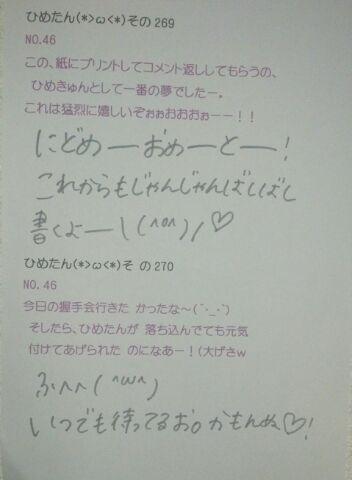

| 2013/06 09 Sun | ひめたん(*>ω<*)そ の303 |
この前撮影してきましたー♪
９パターン衣装を着ました！
着せ替えお人形さんなったみたいで
とってーも楽しかった( ^ω^ )
新曲の衣装がまあー可愛らしいのねー
MVも可愛らしいしね
ちなみにひめたはチーム松村の
某美少女戦士某プリキュアちっくの
ピンクふりふりるーん
もうねーやばたんですかわゆす(*´ω`*)
あの衣装を着るためにあたしは、
あたしは、今日から、走ります！
最近はね自分的には結構頑張ってる
いいねー夏だね。
いわゆるホームページのプロフィール写真も
撮ってきたからねお楽しみにね☆
いわゆるアー写。
えーそして
最近は遠足で川遊びしてきた！
いいねー夏だね。
さらに最近
妹もひめたもオフだったので
ふたりでカラオケ行った( ^ω^ )
７時間ちょい！
ノンストップだたーねほんとにー
久々にがっつし歌いましたんっ
ジャンルはまあーいろいろです＊
こんな居座ったことないなー
さて何曲歌ったでしょう( ^ω^ )♪
９パターン衣装を着ました！
着せ替えお人形さんなったみたいで
とってーも楽しかった( ^ω^ )
新曲の衣装がまあー可愛らしいのねー
MVも可愛らしいしね
ちなみにひめたはチーム松村の
某美少女戦士某プリキュアちっくの
ピンクふりふりるーん
もうねーやばたんですかわゆす(*´ω`*)
あの衣装を着るためにあたしは、
あたしは、今日から、走ります！
最近はね自分的には結構頑張ってる
いいねー夏だね。
いわゆるホームページのプロフィール写真も
撮ってきたからねお楽しみにね☆
いわゆるアー写。
えーそして
最近は遠足で川遊びしてきた！
いいねー夏だね。
さらに最近
妹もひめたもオフだったので
ふたりでカラオケ行った( ^ω^ )
７時間ちょい！
ノンストップだたーねほんとにー
久々にがっつし歌いましたんっ
ジャンルはまあーいろいろです＊
こんな居座ったことないなー
さて何曲歌ったでしょう( ^ω^ )♪

 ひめたんの最近気になっているものは？
ひめたんの最近気になっているものは？
ヨーグルトのちから。
すぅちゃんが卒業したけど、
卒業式には行ったのかな？
卒業式の日は個握でした！
乃木坂2013年のカレンダーで
日芽香ちゃんが着てる洋服（スカート？）
すず香ちゃんも写真集で似たの着てたけど、
お揃いなのかな？(^_^)/
あたしのを勝手に着ていった感じですー
ひめたんの歌声大好き(*^^*)
そこで「13金」の歌ってるパートを
教えて欲しいです！
あと今さらだけど「涙がまだ悲しみだった頃」
「春メロ」の歌割も知りたい！
ありがとー♪
13日の金曜日
・1番Bメロ後半の前半
・2番Aメロ後半
・allサビ
涙がまだ悲しみだった頃
・1番Bメロ後半の後半
・2番Bメロ前半
・all サビ
春のメロディー
・1番Bメロ前半
・2番Aメロ前半
・all サビ
...伝わるかな？
わからんかったら聞きにきて( ^ω^ )笑
すぅちゃんにコレなら勝てる!!とか、
コレは敵わないなって思うことありますかぁ？
とりあ歌は敵わない。
普段は姉妹ですーて感じだけど
ひとりのシンガーとして尊敬しておりますよー
勝るもの。何でしょうね
妹にびーむはできないかと。ええ
三姉妹の真ん中で、"めっちゃ損やー!!"って
エピソードがあれば教えて!?
基本的に真ん中は損よー
話し出せば止まらないけどきっと、
まあひとつ言うなら
どっちつかずのポジション。笑
一般生活でガチで道端でひめたんと遭遇しました。
どんな風に、どんなことを声かけられたいですか？
それとも気づかぬふりの方が良いかしら？
まかせますがー、
え、どんな格好してたかな？へへ
あんましプライベートすぎる空気なら
ちょっと察していただけたら嬉しいかな。

推しタオルとわったっし♪

(＊´・ω・＊)
コメント(179)
2013/06/09 23:48